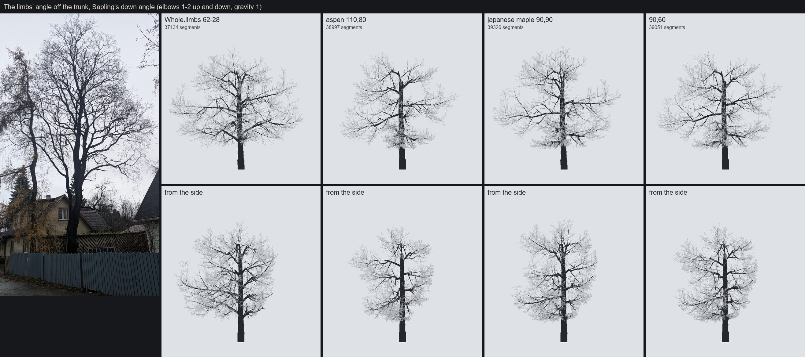
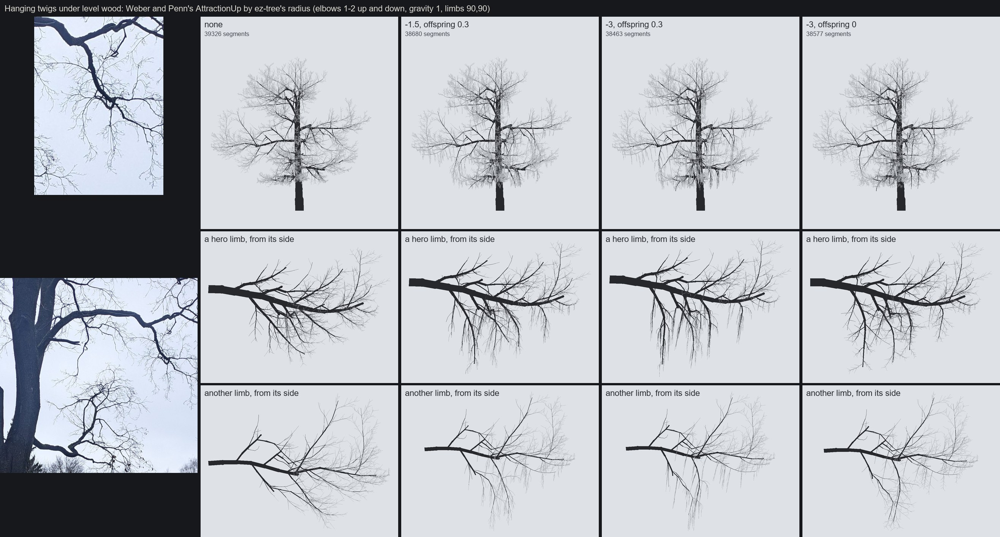
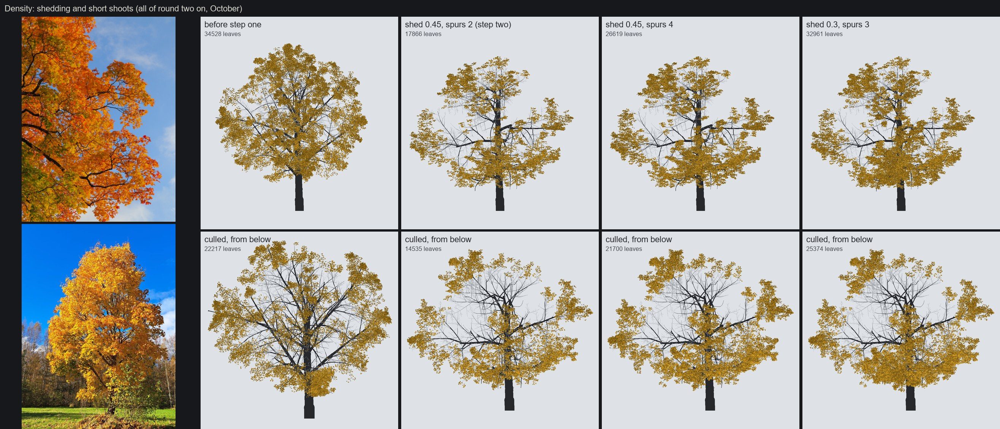
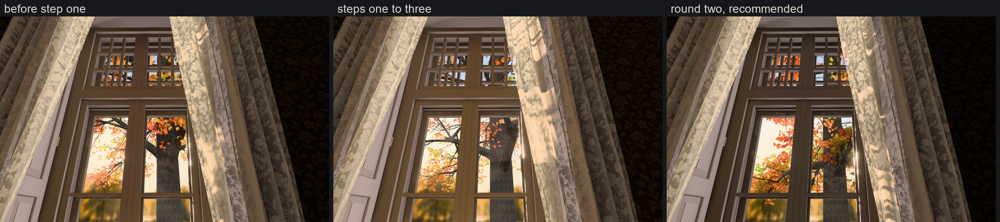
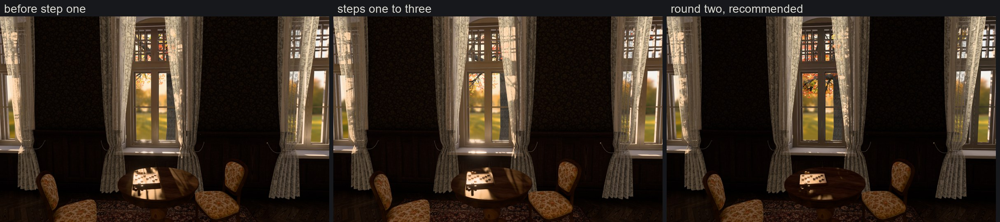

Three new switches for the skeleton and a retune of two old ones. Every switch is off by default, so the app is unchanged. Each picture is a CPU silhouette from tools/tree_dump beside the photo crops; the last pictures are from the light tuner (--tree-draw all). The scripts that made them are in round-2/branches/ (sheets.sh, app.sh, sheet.py). The previous round is in choices.html.
--tree-elbows 1,2,30,50 --tree-gravity 1 --tree-tilt 1,2,8 --tree-bend 1,25):--tree-elbow-plane 1 --tree-limb-angle 1,90,90 --tree-hanging-twigs 1,-3,0.45,0 --tree-shed 0.3,0.5 --tree-plates 1,3,1--tree-plates 1,3,0 (no nudge) it grows in 24 ms.--tree-elbow-plane ON: the side shoot turns in the limb's upright plane. It turns down on a rising limb (more than 15° up) and up on a level one, never past 55° up or 40° down. One or two segments later it turns back 60-100 % of the way. The limb steps like the photos' zig-zags and keeps its way.

Whole.limbs (62° low to 28° high); Sapling's quaking aspen 110,80; Sapling's Japanese maple 90,90; 90,60. All with elbows 1-2 up and down and gravity 1, from the front and the side.--tree-limb-angle ON,DOWN,DOWN_V: the published down angle. Blender's Sapling add-on (fabricate_stems) computes a child's angle as downAngle + -downAngleV × (1 - (1 - offset) / (1 - baseSize))², which is DOWN - DOWN_V × high² for the trunk's limbs. Its comment says this is Weber and Penn's (60, -50). The presets: quaking aspen 110,80, Japanese maple 90,90, small maple 48,48. The gravity layer is not raised: it saturates at Stava's largest angle by design.

--tree-hanging-twigs ON,ATTRACTION,LEVEL,TWIGS: a branch or branchlet that leaves the underside (pointing down) of near-level wood (|slope| under LEVEL) hangs. Each of its segments turns toward the ground by Weber and Penn's AttractionUp (negative) times its declination over its segments. Sapling's weeping willow uses -2.75 and -3. The pull weakens in wood thicker than 1 cm, by 1 cm over the radius (ez-tree turns each section by strength / sectionRadius), so thick wood arches and thin wood hangs. TWIGS is the share of the pull the hanging branch's offspring take.

Since step two, shed twigs take their leaves with them. Shedding at 0.3 and three short shoots a twig (--tree-shed 0.3,0.5 --tree-plates 1,3,1) put back the leaves seen from the room:
| Segments | Leaves, whole | Leaves, culled | Growth (PC) | |
|---|---|---|---|---|
| Before step one | 37,881 | 34,528 | 22,217 | 7 ms |
| Steps one to three | 28,824 | 20,428 | 13,424 | 35 ms |
| Round two, shedding 0.45, spurs 2 | 24,639 | 17,866 | 14,535 | 40 ms |
| Round two, shedding 0.45, spurs 4 | 24,639 | 26,619 | 21,700 | 65 ms |
| Round two, shedding 0.3, spurs 3 | 32,267 | 32,961 | 25,374 | 52 ms |
The nudge is 28 ms of the 52 and grows with the plate's leaves; spurs 4 would leave little of the 100 ms budget. Still: the leaves gather in plates at the shell, with gaps in the upper middle of the crown.

--plan-eye 4.25,5.9,1.5 --plan-at 4.3,12,4.5): before step one, steps one to three, round two recommended.
The season sets only the leaves' tilt; their tint stays autumn's. That is left for a later task. The tuner's --season winter doesn't take the leaves off the geometry either.